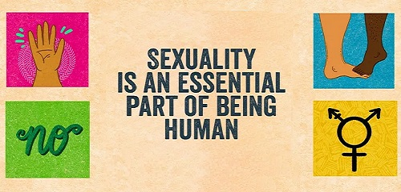

Зміст
Сексуальність людини:
Сексуа́льність люди́ни — сукупність біологічних, психофізіологічних і емоційних реакцій, переживань і вчинків людини, пов'язаних з проявом і задоволенням статевого потягу. Сексуальність є вродженою потребою і функцією людського організму. Людина народжується з певним фізіологічним сексуальним потенціалом, далі сексуальність формується вже в рамках індивідуального життєвого досвіду. У цілому ж, сексуальність людини обумовлена інтегрованим взаємодією біологічних, психічних і соціокультурних факторів.
Є дуже багато форм людської сексуальності. Сексуальність людини включає широкий діапазон поведінки та процесів, фізіологічні, психологічні, соціальні, культурні, політичні, духовні або релігійні аспекти сексу, а також людську сексуальну поведінку. Сексуальність, як і інші аспекти поведінки людини, носить як біологічний, так і соціальний характер: деякі характеристики сексуальності закладені генетично, інші формуються в процесі соціалізації.
Книги з секс-просвіти:
- Наталія Лелюх. Відверта розмова про жіноче здоров’я – КСД
- Інті Чавес Перес. Повага. Хлопцям про любов, секс та згоду
- Юлія Ярмоленко. Малечі про інтимні речі – Харків: Талант
- Мінц Лорі - Кінчай! Твоє право на задоволення
Безпечний секс:
Безпе́чний секс, захищений секс (англ. safe sex, safer sex, protected sex) — сексуальні практики людей, при котрих ризик зараження венеричними хворобами та хворобами, що передаються статевим шляхом (таких як ВІЛ), зводиться до мінімуму. Частіше за все асоціюється з використанням презервативів під час статевого акту. Незахищений (unsafe, unprotected) секс стосується сексуальних практик без заходів безпеки, особливо відмови від презервативів.
На практиці не існує 100 % безпечного сексу — ризик (нехай мінімальний) існує у всіх випадках статевого контакту, тому варіанти безпечного сексу для досягнення максимальної ефективності варто поєднувати.
Відповідальне партнерство:
Зменшення кількості сексуальних партнерок(-ів), особливо анонімних, для немоногамних людей також є дієвим способом зниження потенційного поширення ЗПСШ. Аналогічно, можна обмежити власні сексуальні контакти групою чи спільнотою довірених осіб — цей підхід прийнято деякими порнографічними актор(к)ами та іншими немоногамними людьми.
Вибір сексуального партнера(-ки): певні характеристики можуть підвищити ризик набуття ЗПСШ. Серед них: різниця у віці більше 5 років; наявність ЗПСШ протягом минулого року; проблеми з алкоголем; секс з іншими людьми протягом минулого року
Чесно практикована моногамія чи полівірність є дуже безпечною щодо ЗПСШ, поки всі партнери(-ки) неінфіковані. Між тим, багато моногамних людей заражені ЗПСШ сексуально невірними партнерами, партнерами, що вживали ін'єктивні наркотики або були заражені попередніми сексуальними партнерами; ті ж ризики підстерігають і полівірних людей, котрі стикаються з тим більшою небезпекою, чим більше людей входить до їхньої поліаморної групи.
Спілкування з партнер(к)ами перед сексом. Перед початком сексуальних активностей партнери(-ки) можуть обговорити, в які активності вони будуть включатись, а в які не будуть; яких застережних заходів задля безпечного сексу та контрацепції вони вживуть. Таке обговорення зменшує шанси ризикованих спонтанних рішень, прийнятих «у полоні пристрасті», та небажаних чи непогоджених сексуальних практик, на котрі не дається достатньо часу для свідомої згоди.

Секс-туризм:
Світовою "Меккою" секс-туризму є росія
Іноземцям секс-туристам російські туристичні агенції пропонують безкоштовний секс з російськими дівчатами. Дівчатам — «нареченим», які бажають познайомитись з іноземцем, підносять це наступним чином: потенційний жених повинен познайомитися з дівчиною ближче, але часу розводити тяганину з залицяннями і квітами у нього немає. Тому відносини починаються відразу з сексу, а вже потім, якщо чоловік виявиться задоволений, можна буде продовжити знайомство. І з тих, і з інших агенція, самою собою, бере оплату, причому чималу.
Дівчата і не підозрюють, що ніякого продовження не буде, і що іноземці приїхали до Росії по так званому сексуальному туру («Romantic Tour to Russia») . Вони впевнені, що їхні кавалери — успішні неодружені бізнесмени. Насправді в російські сексуальні тури вихідного дня їздять розведені чоловіки не першої свіжості, які не бажають мати дітей. Зазвичай — слюсарі, працівники автозаправних станцій, електрики, словом, нижчий обслуговчий персонал.
А виробляти із собою «наречені» справді дозволяють все, що завгодно. Так пристрасно не займалися сексом з іноземцем навіть путани. Дівчата впевнені, що, чим краще вони задовольнять заморського нареченого, тим більше шансів, що він відвезе її з собою закордон.
Якщо думаєте що таким чином я натякаю, що російські жінки такий самий непотріб, як і свинособача армія - Ви не помиляєтесь.